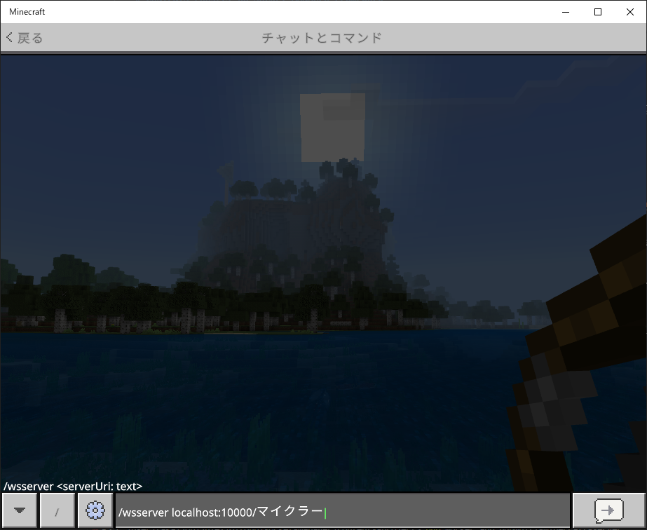
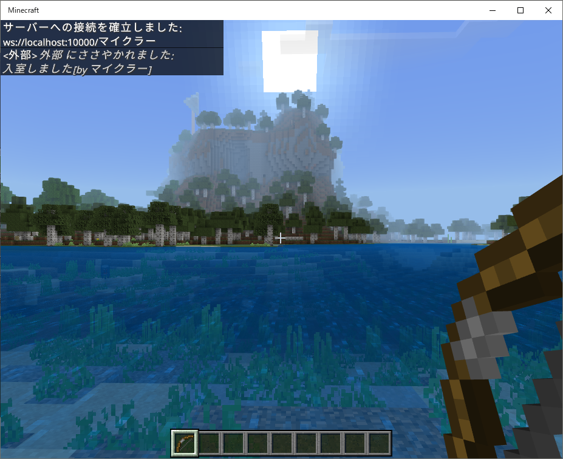
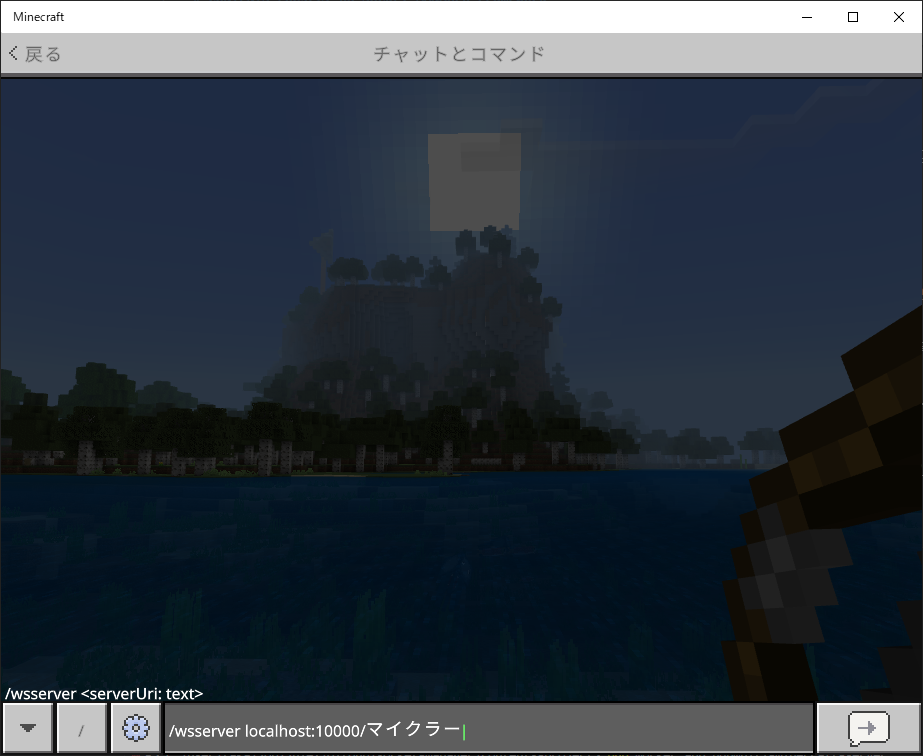
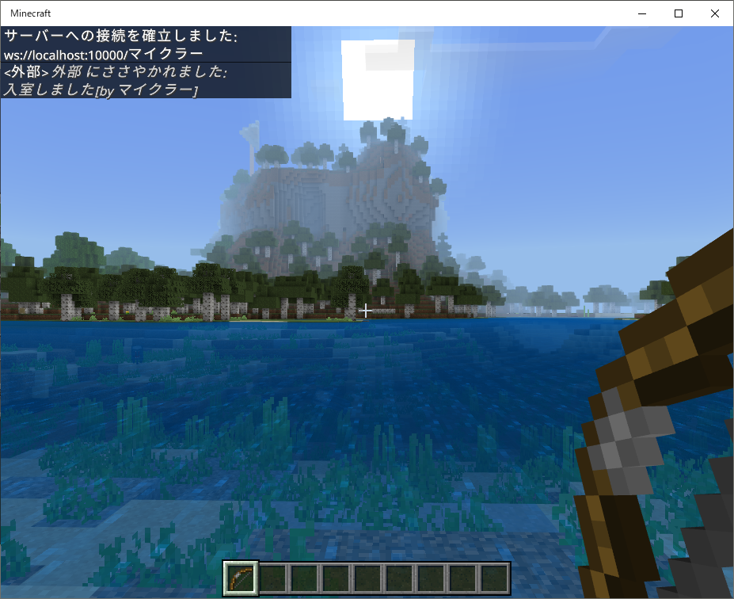

【マインクラフトの環境】
はじめに
ここではWebsocketサーバーを使った運用を前提としています。
スコアボードやコマンドを駆使して四苦八苦しながらイベントを判定したりするのを避け、サーバープログラミングを使って極力運用の負担を減らそうというのが狙いです。
基本的にはファミリー向けに楽しく遊べるものを目指しているので、グローバルコンテンツや商用利用は今のところ考えていません。
サーバーフレームワークのご紹介時に利用したデモ環境は、マインクラフト（統合版）を含めたWebsocket用チャットサーバーの実装例としてご紹介していましたが、ここではマインクラフト専用のコンテンツとしてプロジェクト環境を構築しているので別物だとお考えください。
※この環境はデモ環境をベースに構築しているのでチャット機能も引き継いでいます。
スコアボードやコマンドを駆使して四苦八苦しながらイベントを判定したりするのを避け、サーバープログラミングを使って極力運用の負担を減らそうというのが狙いです。
基本的にはファミリー向けに楽しく遊べるものを目指しているので、グローバルコンテンツや商用利用は今のところ考えていません。
サーバーフレームワークのご紹介時に利用したデモ環境は、マインクラフト（統合版）を含めたWebsocket用チャットサーバーの実装例としてご紹介していましたが、ここではマインクラフト専用のコンテンツとしてプロジェクト環境を構築しているので別物だとお考えください。
※この環境はデモ環境をベースに構築しているのでチャット機能も引き継いでいます。
プロジェクト環境
マインクラフト用のプロジェクト環境は以下のコマンドでインストールできます。
※GitHubから直接ダウンロードする場合は>> こちらからどうぞ。
インストールコマンド
インストール後のディレクトリ構成は以下のようになっています。
ディレクトリ構成
Webブラウザ用クライアントディレクトリにはデモ環境と同じくjQuery版とReact版のHTMLファイル（chat.html）が入っていますのでお好きな方をブラウザにドラッグ＆ドロップしてお使いください。
専用アイテムを有効にするためにはマインクラフトワールドデータのルートテーブルを触る必要があります。
今回使用しているルートテーブルの追加分をプロジェクト内の
このディレクトリの中身をそのまま統合版ゲームデータの
サーバーの起動方法はデモ環境と全く同じです。
例えばマインクラフト用のWebsocketサーバーを起ち上げる場合にはプロジェクトルートで以下のようにコマンドを実行すれば起動します。
サーバーの起動（10000ポートで起動する場合）
※GitHubから直接ダウンロードする場合は>> こちらからどうぞ。
インストールコマンド
> composer create-project socket-manager/contents-project <インストール先のディレクトリ名>
インストール後のディレクトリ構成は以下のようになっています。
ディレクトリ構成
/app
/client Webブラウザ用クライアント
/jquery jQuery版
/react React版
/behavior_packs ビヘイビアパック（マインクラフト用）
/InitClass 初期化クラス
/UnitParameter UNITパラメータクラス
/ProtocolUnits プロトコルUNIT定義クラス
/CommandUnits コマンドUNIT定義クラス
/MainClass メイン処理クラス
/logs ログ出力用
/setting 設定ファイル用
Webブラウザ用クライアントディレクトリにはデモ環境と同じくjQuery版とReact版のHTMLファイル（chat.html）が入っていますのでお好きな方をブラウザにドラッグ＆ドロップしてお使いください。
専用アイテムを有効にするためにはマインクラフトワールドデータのルートテーブルを触る必要があります。
今回使用しているルートテーブルの追加分をプロジェクト内の
app/behavior_packsディレクトリにビヘイビアパックとして同梱しています。このディレクトリの中身をそのまま統合版ゲームデータの
behavior_packsディレクトリにコピーしてお使いください（詳細は<< こちら）。サーバーの起動方法はデモ環境と全く同じです。
例えばマインクラフト用のWebsocketサーバーを起ち上げる場合にはプロジェクトルートで以下のようにコマンドを実行すれば起動します。
サーバーの起動（10000ポートで起動する場合）
> php worker app:minecraft-chat-server 10000
マインクラフトからの接続
マインクラフトはUWPアプリのためlocalhost（127.0.0.1）で利用する場合は以下のコマンドを実行してループバックアドレスへのアクセスを許可しておく必要があります。
ループバックアドレス許可の設定
マインクラフトからWebsocketサーバーへ接続する時はチャット画面で以下のように入力します。 
入力書式（10000ポートに接続する場合）
上記のユーザー名はマインクラフト内のユーザー名でなくても構いません。
あくまでWebsocketサーバー内で使用する名前です。

接続が完了すれば画面左上に上記のようなメッセージが表示されます。
接続後は左メニューのCONTENTSの項目でご紹介している機能が使えるようになります。
ループバックアドレス許可の設定
> CheckNetIsolation.exe LoopbackExempt -a -n="Microsoft.MinecraftUWP_8wekyb3d8bbwe"
マインクラフトからWebsocketサーバーへ接続する時はチャット画面で以下のように入力します。 
入力書式（10000ポートに接続する場合）
> /wsserver localhost:10000/<ユーザー名>
上記のユーザー名はマインクラフト内のユーザー名でなくても構いません。
あくまでWebsocketサーバー内で使用する名前です。

接続が完了すれば画面左上に上記のようなメッセージが表示されます。
接続後は左メニューのCONTENTSの項目でご紹介している機能が使えるようになります。